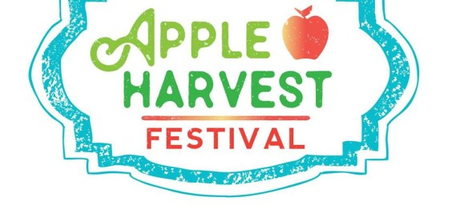

Welcome to the Ithaca Apple Harvest Festival
Homepage
About
Navigation
Products Sold
Feedback

Source:
Logo for the Apple Harvest Festival
Google Maps Link
Google Maps Link
Information About Parking
Garage parking is $1.00/hour in the garages. On-street parking is $1.50/hour during the week until 6pm.
Source:
Ithaca Parking
For additional information about parking visit:
Parking Meter Rule in Ithaca
Additional Resource: Parking Information Brouchure
Information About the TCAT Bus Service
TCAT Bus Service Website